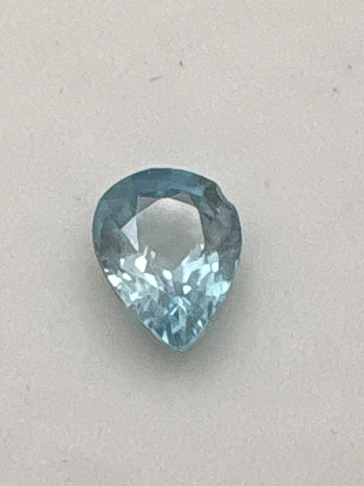

The Gem Drawer › No. 82

A clean light blue pear-cut zircon, label and stone in agreement.
| Catalogue no. | #82 |
|---|---|
| As labeled | Blue Zircon |
| Shape / cut | Pear |
| Weight | Not recorded |
| Measurements | Not recorded |
| Colour | Light blue |
| Clarity / condition | Not recorded |
Interested in this stone, or in the collection as a whole? Terry VanWormer can answer questions about it.
Click here to inquireor email Terry directly at maxrebo34@gmail.com